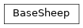
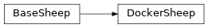
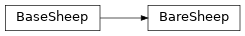

shepherd.sheep¶
Classes¶
BaseSheep: A base class for container adapters - classes that allow launching different kinds of containers.DockerSheep: Sheep running its jobs in docker containers.BareSheep: An adapter that running models on bare metal withshepherd-runner.
-
class
shepherd.sheep.BaseSheep(socket, sheep_data_root)[source]¶ Bases:
objectA base class for container adapters - classes that allow launching different kinds of containers.
-
class
Config(raw_data=None, trusted_data=None, deserialize_mapping=None, init=True, partial=True, strict=True, validate=False, app_data=None, lazy=False, **kwargs)[source]¶ Bases:
schematics.deprecated.Model
-
__init__(socket, sheep_data_root)[source]¶ Create new
BaseSheep.- Parameters
socket (
Socket) – socket for feeding sheep’s runner with InputMessagessheep_data_root (
str) – sheep data root with job working directories
-
class
-
class
shepherd.sheep.DockerSheep(config, registry_config, command=None, **kwargs)[source]¶ Bases:
shepherd.sheep.base_sheep.BaseSheepSheep running its jobs in docker containers. To enable GPU computation, specify the gpu devices in the configuration and sheep will attempt to use
nvidia docker 2.-
class
Config(raw_data=None, trusted_data=None, deserialize_mapping=None, init=True, partial=True, strict=True, validate=False, app_data=None, lazy=False, **kwargs)[source]¶ Bases:
shepherd.sheep.base_sheep.Config
-
_CONTAINER_POINT= 9999¶ Container port to bind the socket to.
-
__init__(config, registry_config, command=None, **kwargs)[source]¶ Create new
DockerSheep.
-
class
-
class
shepherd.sheep.BareSheep(config, **kwargs)[source]¶ Bases:
shepherd.sheep.base_sheep.BaseSheepAn adapter that running models on bare metal with
shepherd-runner. This might be useful when Docker isolation is impossible or not necessary, for example in deployments with just a few models.-
class
Config(raw_data=None, trusted_data=None, deserialize_mapping=None, init=True, partial=True, strict=True, validate=False, app_data=None, lazy=False, **kwargs)[source]¶ Bases:
shepherd.sheep.base_sheep.Config
-
__init__(config, **kwargs)[source]¶ Create new
BareSheep.- Parameters
config (
Dict[str,Any]) – bare sheep configuration (BareSheep.Config)kwargs – parent’s kwargs
-
_load_model(model_name, model_version)[source]¶ Set up runner config path to
working_directory/model_name/model_version/config.yaml.- Parameters
- Raises
SheepConfigurationError – if the runner config path does not exist
- Return type
None
-
class